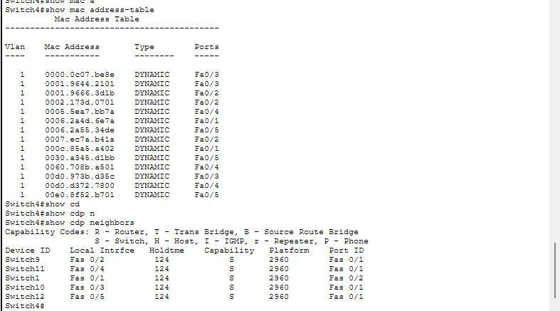
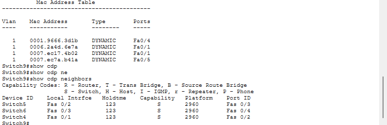
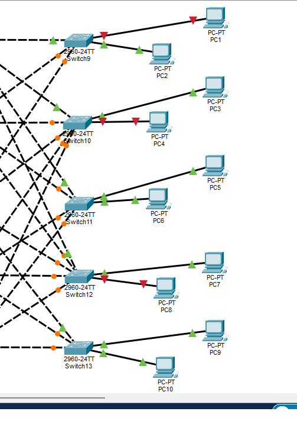

06 / NET02 / CISCO PACKET TRACER
Tracing & Containing Suspicious Network Endpoints
I followed three flagged MAC addresses through an unfamiliar switched network, located their endpoint ports, and disabled those connections while checking that the remaining hosts still responded.
This investigation uses Practical Networking’s Find the Imposter – Layer 2 challenge. The topology and flagged addresses were supplied; I carried out the CLI investigation with coaching on command use and evidence interpretation.
THE OBJECTIVE
Locate the host without guessing or inspecting its console
The brief identified three MAC addresses as malicious. Starting at Switch0, I had to trace each one to its attachment port and shut that port down. The rules prohibited access to PC1 through PC10 and random switch visits.
The practical challenge was distinguishing a shared transit link from a host connection. A MAC entry on an uplink tells me where to look next; disabling it could disconnect other users.
INVESTIGATION METHOD
Follow the evidence one hop at a time
- Refresh the evidence: the first MAC table lacked the targets after I stopped the traffic generator. I restarted
ping -t 10.9.9.255on PC0 and left it running. The refreshed table included all three targets. Aging was a plausible explanation for the earlier sparse table; I did not measure the timer. - Find the learned port:
show mac address-tablelocated each target. All three initially pointed through Switch0 Fa0/1, then Switch1 Fa0/2. - Identify the next switch:
show cdp neighborsmapped each local port to its neighbor. The shared path led to Switch4, where the targets split toward Switch9, Switch10, and Switch12. - Confirm the attachment: I checked interface status, operational access mode, VLAN 1 membership, and cable connections. The absence of a CDP entry alone would not prove that a port connects to a PC.
- Contain and verify: I disabled only the three endpoint ports, checked for
disabledstatus, saved each switch configuration, and compared fresh ICMP responders with the initial baseline.
FINDINGS & CHANGE RECORD
Three targets, three confirmed attachments
All three traces shared Switch0 → Switch1 → Switch4. From there, each target led to a different endpoint switch. I completed one trace before following the next branch.
| Target MAC | Switch4 next hop | Attachment port | Endpoint | Result |
|---|---|---|---|---|
0001.9666.3d1b | Fa0/2 → Switch9 | Switch9 Fa0/4 | PC1 | Disabled; saved [OK] |
0000.0c07.be8e | Fa0/3 → Switch10 | Switch10 Fa0/7 | PC4 | Disabled; saved [OK] |
0006.2a55.34de | Fa0/5 → Switch12 | Switch12 Fa0/7 | PC8 | Disabled; saved [OK] |
I used shutdown on each confirmed attachment and copy running-config startup-config to save the change. The screenshots show successful saves on all three switches. I did not perform a reload test.
SELECTED EVIDENCE
From a learned MAC to a targeted disconnection
Images open at full size. The nine-page PDF includes the initial evidence gap, hop-by-hop tables, port checks, and all three configuration saves.







OUTCOME & LESSONS
Confirm the change and check what still works
The final ping showed replies from 10.9.9.254, .102, .103, .105, .106, .108, .109, and .110. That is eight distinct responders, compared with eleven initially. Together with the disabled attachment ports and disconnected endpoint links, this supports the intended containment result.
I compared distinct responders rather than treating the broadcast ping’s aggregate counters as ordinary packet-loss statistics: in this simulation, one request can receive multiple replies. The check demonstrates ICMP reachability from PC0 during the test, not application availability or all-pairs connectivity.
The main lesson was to keep each decision tied to current evidence. A sparse MAC table does not prove a device is gone. A missing CDP entry does not prove there is no connection. A learned uplink is a direction to investigate, not automatically the right place to make a change.
This work develops practical switch-port tracing, device-location, and containment habits that support both network operations and security investigations.
CONTINUE EXPLORING
Networking: build it, then investigate it.
NET01 covers a segmented Cisco office network. NET02 follows evidence through a supplied topology to locate and contain specific endpoints.